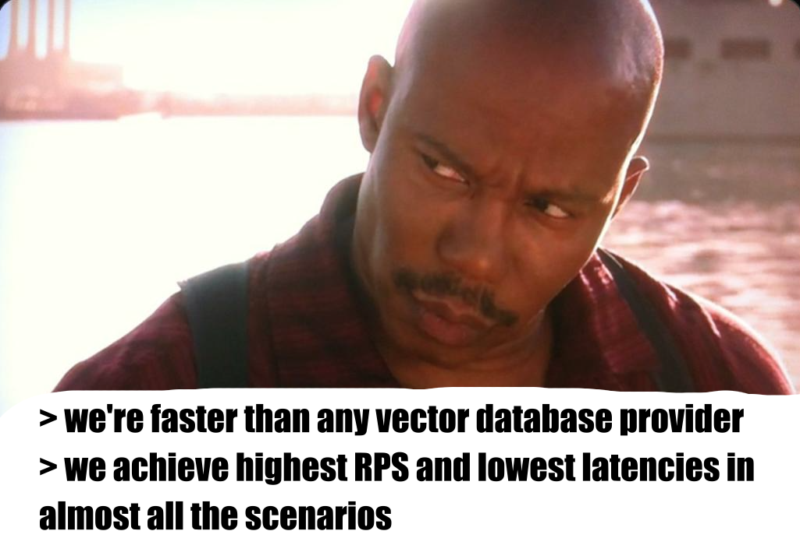
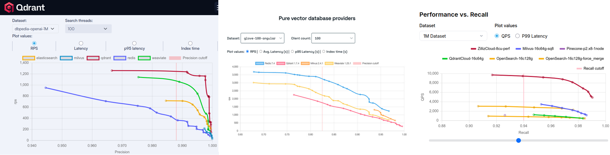
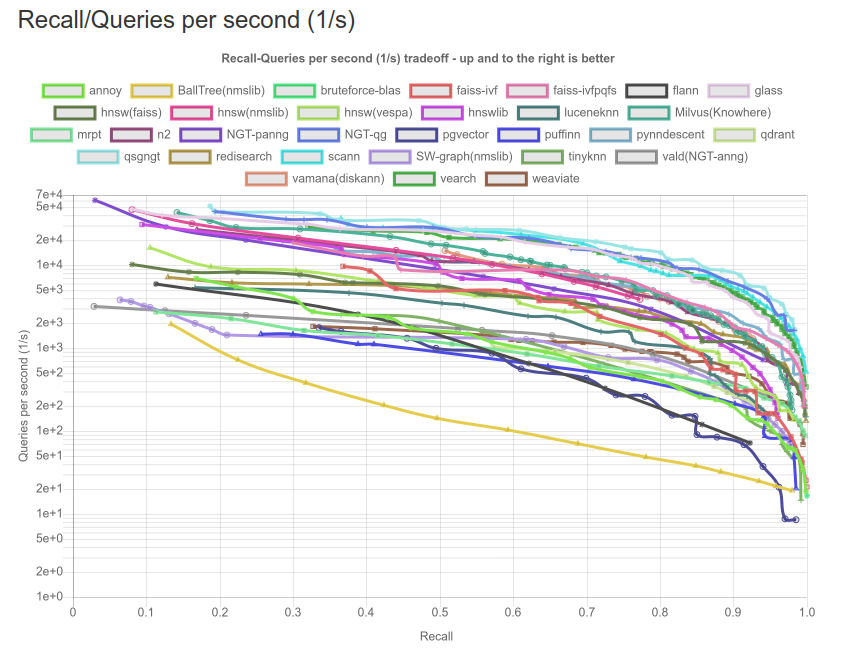

HOW TO CHEAT
AT BENCHMARKING SEARCH ENGINES
Vector Space Day 2025 | Berlin | Roman Grebennikovwhoami

- PhD in CS, quant trading, credit scoring
- Findify: e-commerce search, personalization
- Delivery Hero: food search, LLMs
- Opensource: Metarank, LightGBM4j, Nixiesearch
Vector search at DH
- Started at 2024: off-the-shelf embeddings were bad
- Fine-tuned embeddings: biggest a/b test uplift [MICES'24]
- V1: Embedded Lucene with immutable index
Lucene as a vector search engine?

- pros: tool 3 days to implement, no extra costs
- cons: pod startup, bigger embeddings, latency spikes
Tech debt: should be moved to a proper search engine eventually
Which search engine?
- Data: 2-3M docs, 368-2560 dimension
- High selectivity filtering: by availability
- Low selectivity filtering: by geolocation
Candidates:
ES, OS, Qdrant, Weaviate, Redis, Mongo Atlas, pgvector, ...
Rabbit hole of vendor benchmarks
- Vendor's database is always faster - why?
- Different versions, hardware, datasets and parameters
ANN benchmark
Nixiesearch
A stateless search search engine
- Runs over S3 block storage
- Lucene: same engine as Elastic/Opensearch/SOLR